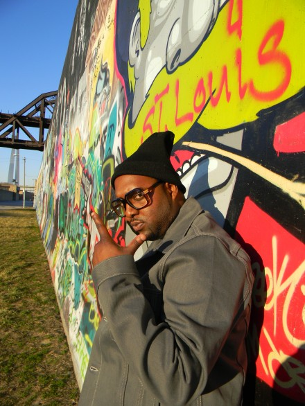

<div class="container-responsive cont-res-bio">
<div class='bio-paragraph container-child'>
    <div class="bio-scroll">
        <h1>I'm Larry Byrd</h1>
        <div class="bio-img container-responsive">
            </img>
        </div>
        <p>Bio If one word could describe Larry's musical style of writing, producing & artistry, it would be DIVERSE. Focusing on engaging content & creating from a heartfelt place his music is guaranteed to have the listener pushing repeat & relating. Catchy hooks, authentic lyrics & well orchestrated production sets Larry aside from all the current fabrications in music. Born and raised in Saint Louis, Mo Larry has been around diversity his entire life, and by embracing his surroundings he's able to create from an open mind with no boundaries. Exposed to the usual inner city lifestyles that a lot of black communities experience, Larry takes that pain and paints sounds with melodies. Getting his start early, in middle school, Larry played the saxophone and read sheet music while writing all type of songs. Never afraid to musically take risks, his ultimate goal in music is success, longevity & respect. Performing live for Def Jam Records & declining a few recording contracts due to inconsolable differences, Larry has built extensive relationships with deejays & artists locally & abroad. One song away from a hit & aware of the constant changes in the culture he understands that to achieve success & longevity that his pen have to stay mightier than the sword.</p>
    </div>
</div>
</div>